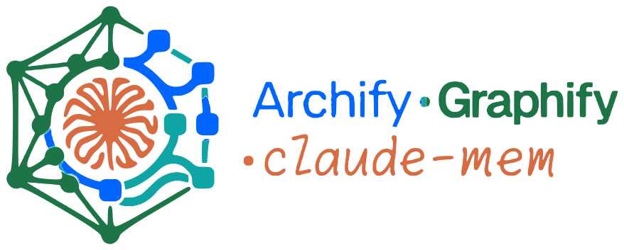
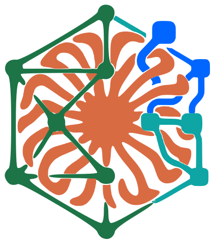
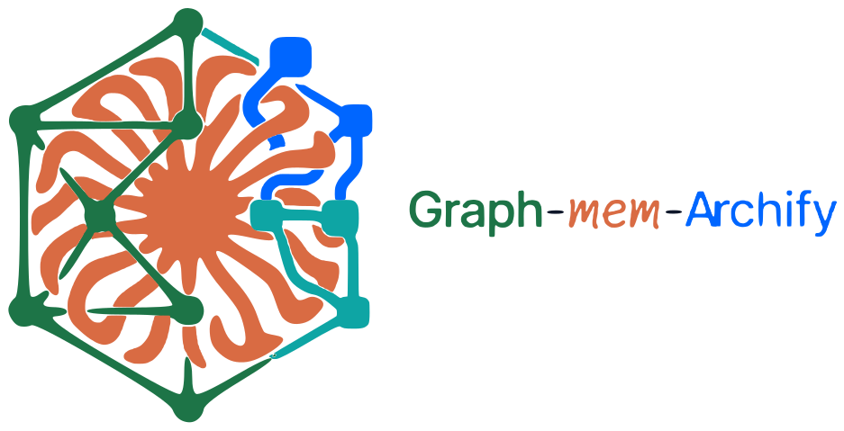

01 // Graphify AST (0 Tokens)
02 // Claude-Mem (:37777)
03 // Archify Interactive HTML
Map any codebase once. Persist it in memory. Explore it visually.
A surgical fusion of deterministic AST parsing, compressed cross-session memory, and interactive HTML diagrams—built to eliminate blind repo scans and cut agent boot tokens by 65–85%.
npx graph-mem-archify . --project MyRepo
Built Upon Three Open-Source Pillars
Graph-mem-Archify is an explicit bridge unifying the aesthetics and workflows of these original repositories:
01 // KNOWLEDGE GRAPH
Graphify-Labs/graphify
Local deterministic AST parsing, edge explanations, and zero-vector-store structural graphs.
02 // PERSISTENT MEMORY
thedotmack/claude-mem
Session capture, observation compression, and cross-session context injection over SQLite/MCP.
03 // INTERACTIVE DIAGRAMS
tt-a1i/archify
Interactive standalone HTML architecture maps with Sequence, Data Flow, Path Trace, and code links.
DUAL LOCKUP BRANDING
Custom Vectorized Identity
Pure SVG emblems and Light/Dark lockups extracted from the custom tri-logo fusion artwork.

